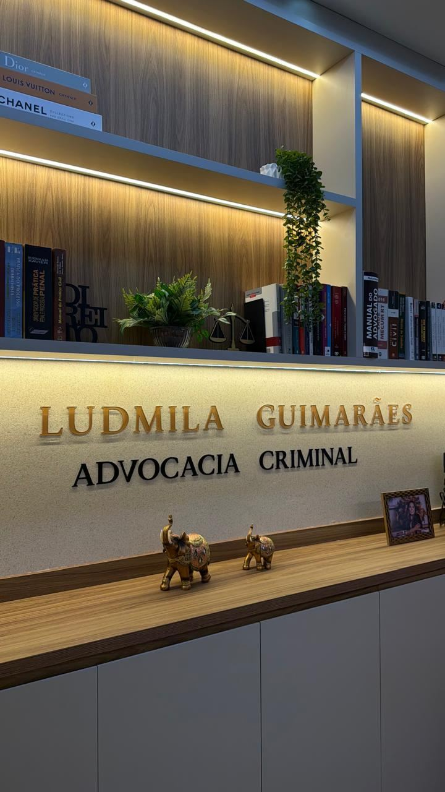

Intimado, investigado ou com um familiar preso?
Investigações, acusações e processos criminais exigem uma atuação jurídica cuidadosa. Conheça seus direitos e conte com uma defesa estratégica e individualizada.
Qual é a sua situação?
Enfrentando um problema na Justiça Criminal?
Cada situação exige atenção aos detalhes, conhecimento jurídico e uma estratégia de defesa adequada.
Prisão em Flagrante
Orientação jurídica diante de prisões e acompanhamento dos procedimentos legais.
Falar sobre isso → 02Investigação Policial
Acompanhamento em inquéritos e procedimentos investigativos, com atenção à proteção dos direitos do investigado.
Falar sobre isso → 03Intimação para Delegacia
Assistência jurídica para quem foi intimado a prestar esclarecimentos ou participar de procedimentos policiais.
Falar sobre isso → 04Processos Criminais
Defesa técnica em ações penais, com análise individualizada dos fatos e das provas.
Falar sobre isso → 05Audiência de Custódia
Atuação jurídica na análise da legalidade e necessidade da prisão e das medidas cabíveis.
Falar sobre isso → 06Execução Penal
Orientação e acompanhamento jurídico durante o cumprimento da pena, conforme as particularidades do caso.
Falar sobre isso →Sua liberdade e seus direitos merecem atenção.
Enfrentar uma investigação ou acusação criminal pode gerar dúvidas e insegurança. Uma orientação jurídica adequada permite compreender a situação, avaliar os caminhos legais e definir a estratégia de defesa conforme as particularidades do caso.
- I.Atendimento humanizado e discreto.
- II.Análise individualizada de cada situação.
- III.Atuação técnica e estratégica em Direito Criminal.

Ludmila Guimarães
Advogada Criminalista
Pós-graduada em Direito Penal e Processo Penal, a Dra. Ludmila Guimarães possui uma trajetória de 13 anos na advocacia criminal, com atuação em todo o território nacional.
Com vasta experiência em todas as fases da persecução penal, desde o inquérito policial até a execução da pena, desenvolve um trabalho pautado na ética, na dedicação e no compromisso com a Justiça.
Sua atuação é marcada por uma defesa humanizada, estratégica e individualizada, com atenção às particularidades de cada caso e respeito à história, à dignidade e aos direitos de cada cliente.
experiência
Processo Penal
o território nacional
Perguntas comuns
O acompanhamento jurídico pode ajudar a compreender a finalidade da intimação e a preservar seus direitos durante o procedimento.
É importante buscar orientação jurídica para conhecer a situação da prisão e avaliar as medidas legalmente cabíveis.
Sim. A assistência jurídica também pode ocorrer durante a fase investigativa.
O primeiro contato pode ser realizado pelo WhatsApp, para apresentar a situação e obter informações sobre o atendimento jurídico.
Precisa de orientação em Direito Criminal?
Cada caso possui particularidades que precisam ser analisadas com atenção. Entre em contato para obter informações sobre o atendimento jurídico.